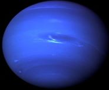

Earth |
Venus |
Jupiter |
 Jupiter |
|
|---|---|---|---|---|
| Mass (KG) | 5.98 x 1024 | 4.87 x 1024 | 1.90 x 1027 | 1.02 x 1026 |
| Diameter (KG) | 12756 | 12104 | 142,800 | 49528 |
| Mean density (kg/m3) | 5520 | 5250 | 1314 | 1640 |
| Escape velocity (m/s) | 11200 | 10400 | 59500 | 23300 |
| Average distance from Sun | 1 AU (149,597,890 km) | 0.723 AU (108,208,930 km) | 5.203 AU (778,412,020 km) | 30.07 AU (4,498,252,900 km) |
| Rotation Period | 1 (23.93 hours) | 243.02 (retrograde) | 0.41 (9.8 Earth hours) | 0.67 (19.1 hours) |
| Revolution Period | 365.26 Days | 224.7 Days | 11.86 Years | 164.8 Years |